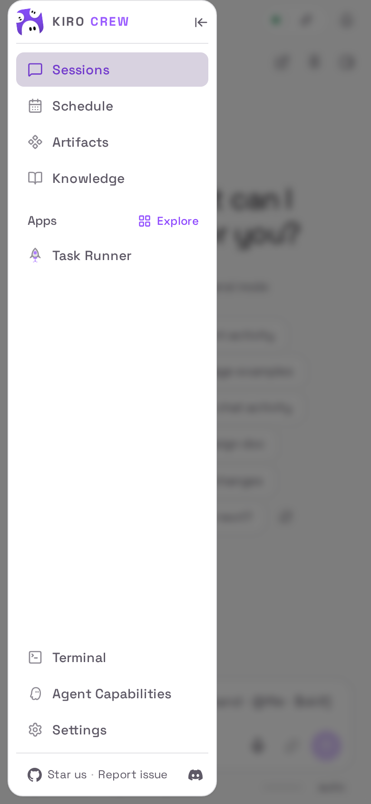
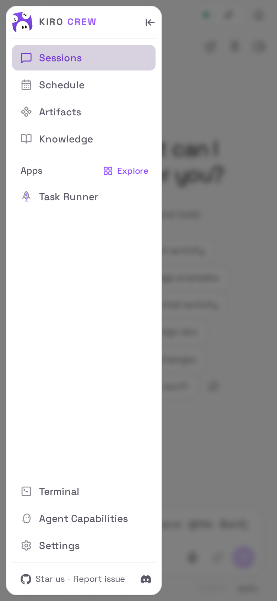

Real captures from an isolated pod at 390×844 (deviceScaleFactor 2), drawer open. Insets are a 3× zoom of the drawer's top-left corner.
Before
top 0px · left 8px · bottom 8px

no gap above the card
After
top 8px · left 8px · bottom 8px

8px gap above the card